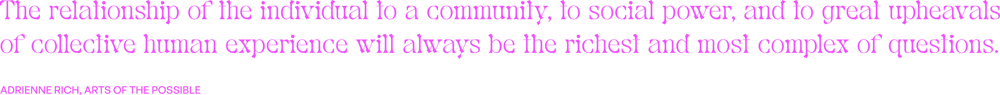

Submissions respond the following questions:
How do you think girlhood is defined, broadly?
How would you define girlhood?
If you had to describe your experience of girlhood in a sentence or less, what would you say?
Girlhood Redefined is a web archive and exhibition in partnership with the Kinsey Institute and funded by the Cox Scholars Program. The project has been shown at the Tangent Gallery at Indiana University spring 2024.
Girlhood Redefined not only seeks to showcase the multiplicity of girlhood, but is an attempt to think through what it means to create knowledge and collective subjectivity from a feminist perspective. The project exemplifies the role that artists and designers, as creators and curators of knowledge, can have in this endeavor, and provides an example of how feminist methodologies relate to design practices. Girlhood is not limited to cis experiences or requires one to currently identify as a girl or woman.
My research focused on moral / sex education books within the Kinsey Institute’s collections from the early 1900s that offered parents, specifically mothers, information on the morals and behaviors of an ideal girl. Such books had widespread influence as the primary resource for sex education at the time, and represent the ideological foundations of the commonplace understanding of girlhood in the United States today. Though their influence has been widespread, unsurprisingly, the understandings of girlhood proposed within these books do not match how girls actually think about themselves. Nor do they account for the hardships and violence girls often experience. This project is a direct response to these sex education guides and allows girlhood to be defined from a bottom-up process, inspired by standpoint theory and other feminist epistemologies.
There is a multiplicity of ways one can experience girlhood, though much of our experience is the same. Only by translating across the multiple ways of experiencing girlhood can feminists have a basis for the creation of more inclusive, uniting, and empowering knowledge of what it means to be a girl. This archive is just a first step.
More about the project and exhibition can be viewed ⟶ here.



website design and development by avrie allen